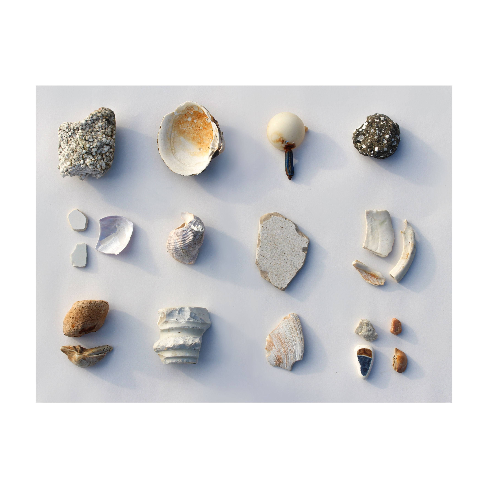
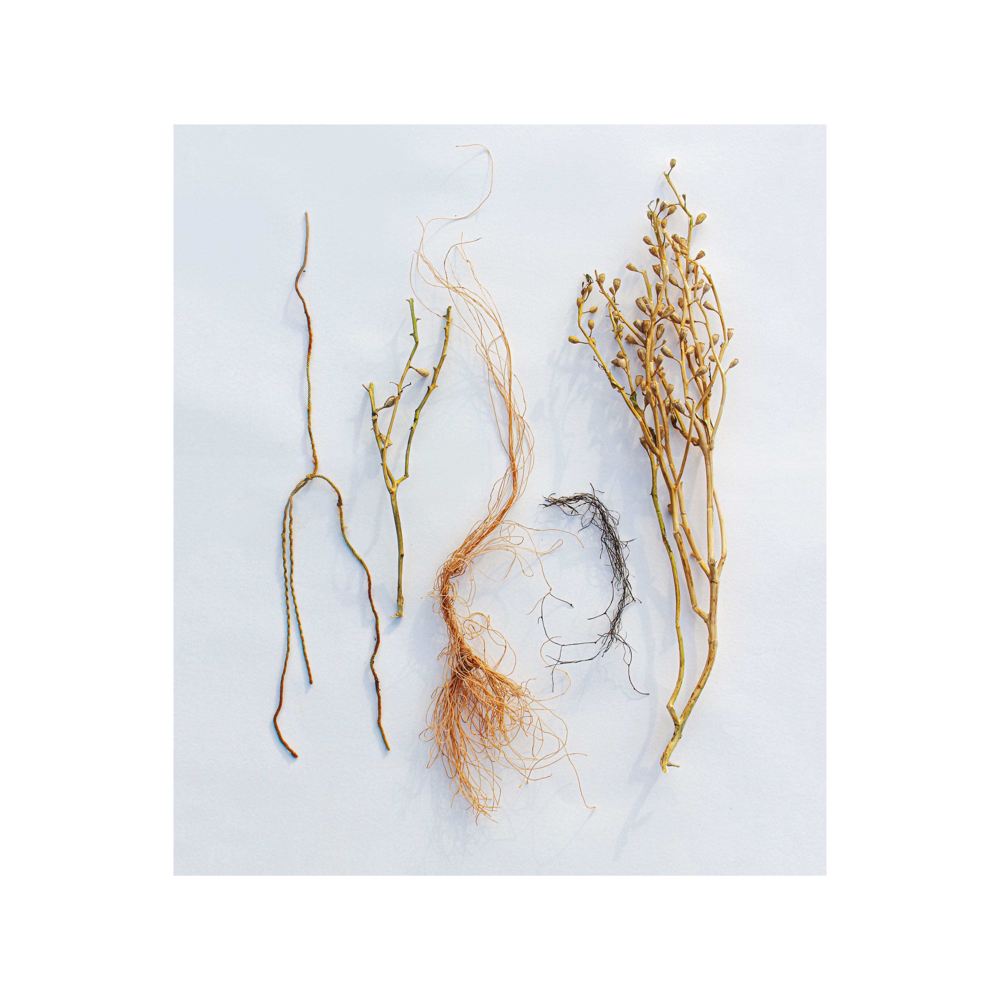
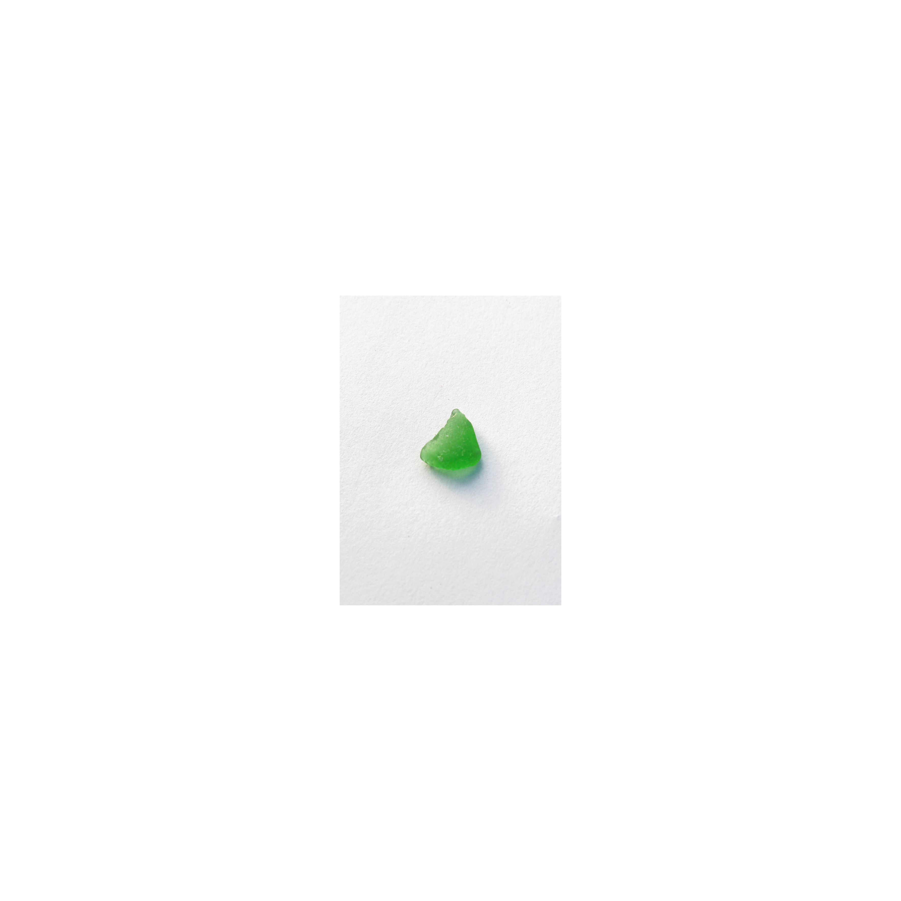

PUZZLES
2023 · Created during ArtsIceland residency funded by Culture moves Europe · Ísafjörður, Iceland

Concept
Upon reaching the ocean, we followed a familiar ritual, walking along the shoreline and collecting fragments. Each find quickly turned into a question. Is this shaped by geological time or by human intervention. Natural or artificial. In the context of the Anthropocene, such distinctions lose their clarity. Worn smooth by water and friction, these fragments resist classification. Plastic mimics stone, glass dissolves into sand, organic matter carries traces of extraction, processing, and disposal. The shoreline becomes a space where natural and industrial histories merge. Here, the landscape functions as a single material body, hybrid and inseparable from human activity. The Anthropocene reveals itself not through grand events, but through these small, ambiguous remains. The puzzle is no longer to determine origin, but to recognize that origin itself has become shared.
  